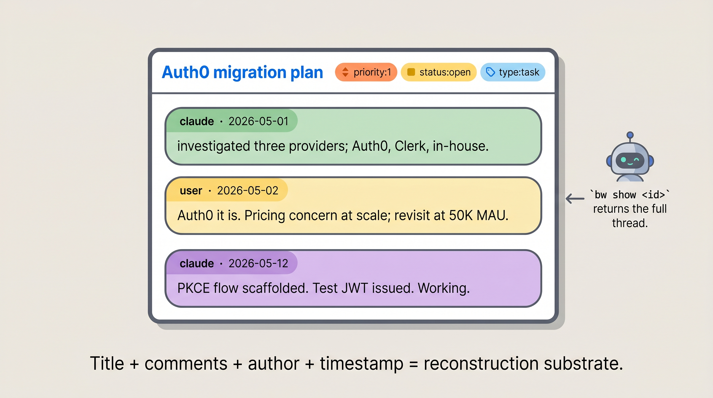

bw stores everything as ticket-shaped records on a special git branch (the orphan branch — never merged into your code, just sitting in your repo's git database).

returns the full thread.'">Title + comments + author + timestamp = reconstruction substrate.
Each ticket has:
Months later, your AI runs bw show <ticket-id> and gets the full thread back — title, description, every comment in order, every author, every timestamp. Because it's git-backed, you can also see the diff history of edits.
The past doesn't get retroactively rewritten. You see the timeline of how you got here, not just the current state. That's a structural difference from most "AI memory" tools, which overwrite state.